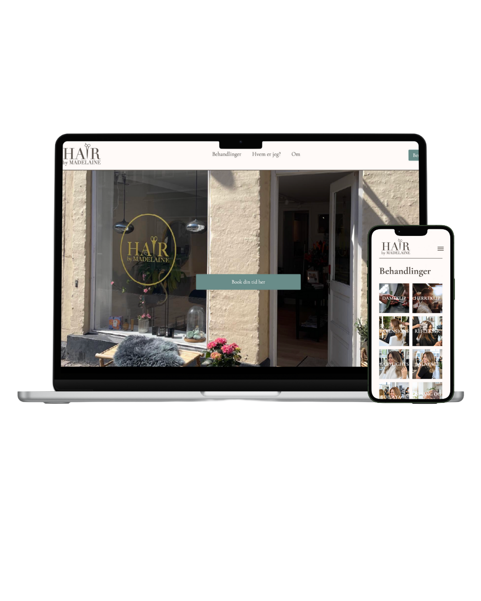

TEMA 5 - GRUNDLÆGGENDE INDHOLD
I tema 5 blev vi introduceret til Adobe Photoshop og Adobe After Effects. Samtidig arbejdede vi mere i dybden med GitHub, hvor der var fokus på samarbejde via branches og fælles kodehåndtering.
SANDKASSESITE
Inden vi gik i gang med det større virksomhedsprojekt, arbejdede vi med et sandkassesite. Her lærte vi blandt andet at designe en hero section ved hjælp af Adobe Illustrator.

I denne periode var jeg dog meget ramt af sygdom, hvilket betød, at jeg primært nåede at designe hjemmesiden i Figma og ikke fik færdiggjort den kodede del.
Øvelsen gav mig alligevel en forståelse for opbygning og visuel struktur, som jeg kunne tage med videre i temaet.
Se figma herDet primære projekt i tema 5 bestod af et redesign af en eksisterende virksomhed og blev udført i grupper. Vi arbejdede ud fra Scrum-metoden, hvor opgaver og roller blev fordelt, og vi afholdt daglige opfølgende scrum-møder. Gennem hele processen arbejdede vi i et fælles Figma-dokument, hvor vi løbende holdt hinanden opdateret på design, idéer og fremskridt.
Se figma her
Redesignet bestod af en forside med en hero section, en sektion med tre cards med relevant information samt en Instagram-sektion, da virksomheden havde stor aktivitet på denne platform.
Derudover indeholdt sitet undersider med virksomhedens ydelser, information om ejeren samt praktiske oplysninger om virksomheden og dens lokation.
Projektet blev afleveret på Itslearning og afsluttet med en præsentation i plenum.
Se sitet her